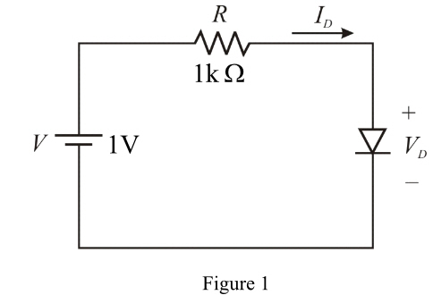

Substitute  in equation (1).
in equation (1).
Consider the circuit diagram is shown in Figure 1.

Consider the voltage drop across diode is,
From Figure 1, the current through the diode is,
…… (1)
Substitute the values .
The relation for the diode current is,
Here, VT =0.0.25 V.
Rearrange the equation.
. …… (2)
Substituting the values in equation.
Substitute in equation (1).
Substitute in equation (2).

Substitute  in equation (1).
in equation (1).
The same values of currents and voltages are repeating.
Therefore, the voltage across the diode is and current through the diode is .